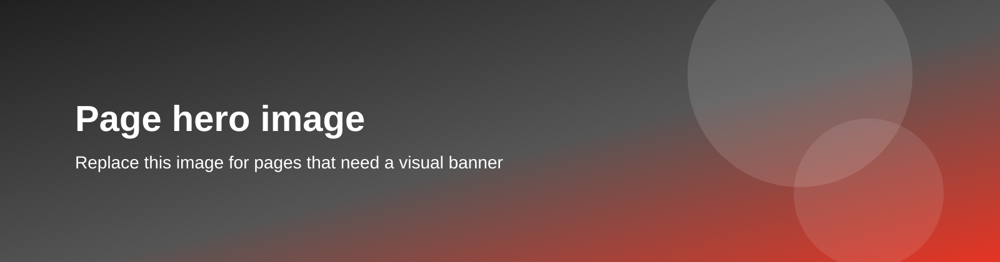

Сочетание верхнего баннерного изображения (блок .template-page-hero перед <main>) и левой колонки навигации, как на длинных разделах исходного сайта.
Используйте его, когда разделу нужны и визуальный баннер под шапкой, и боковое меню: например главные страницы подразделов «Обучение», «Технологии» или витрины раздела «О компании».